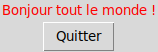
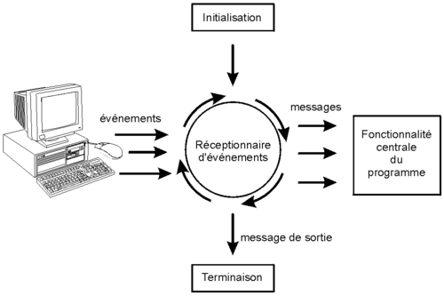
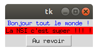

Hello world
Premier contact
Dans l'exemple qui suit, nous allons créer une fenêtre très simple, et y ajouter deux composants graphiques (widgets) typiques : un bout de texte (ou label) et un bouton (ou button).
import tkinter as tk
# Creation de la fenetre graphique
mon_app = tk.Tk()
# Creation des composants de la fenetre (widgets)
texte = tk.Label(mon_app, text='Bonjour tout le monde !', fg='red')
texte.grid(row=0, column=0)
bouton = tk.Button(mon_app, text='Quitter', command = mon_app.destroy)
bouton.grid(row=1, column=0)
# Lancement de l'application (boucle principale)
mon_app.mainloop()
Lancez le programme python, vous devriez obtenir ceci : 
Explications
La première ligne de notre exemple :
import tkinter as tk consiste à importer le module tkinter.
Pour accéder aux fonctionnalités de ce module (propriétés et méthodes) il faudra faire
précéder le nom de la commande du préfixe tk.
À la deuxième ligne de notre exemple : mon_app = tk.Tk(), nous créons
notre objet
application qui prend la forme d'une fenêtre graphique.
À la troisième ligne : texte = tk.Label(mon_app, text='Bonjour tout le monde !', fg='red')
nous créons un autre objet (un widget), cette fois à partir de la classe Label().
Comme son nom l'indique, cette classe définit toutes sortes d'étiquettes. En fait, il s'agit tout simplement
de fragments de texte quelconques, utilisables pour afficher des informations et des messages divers à
l'intérieur d'une fenêtre. Nous fournissons un certain nombre d'arguments dans des parenthèses :
Le premier argument transmis (mon_app), indique que le nouveau widget que nous sommes en train de
créer sera contenu dans un autre widget préexistant, que nous désignons comme le parent (On
pourra dire aussi que l'objet texte est un enfant de l'objet mon_app).
dans cet exemple, le widget texte est un enfant de notre fenêtre
application.
Les deux arguments suivants servent à préciser la forme exacte que doit prendre notre widget. Ce sont en
effet deux options de création, chacune fournie sous la forme d'une chaîne de caractères : d'abord le texte
de l'étiquette, ensuite sa couleur d'avant-plan (ou foreground, en abrégé fg).
Ainsi le texte que nous voulons afficher est bien défini, et il doit apparaître coloré en rouge.
Nous pourrions encore préciser bien d'autres caractéristiques : la police à utiliser, ou la couleur
d'arrière-plan, par exemple.
À la quatrième ligne de notre exemple : texte.grid(row=0, column=0) nous activons la
méthode du gestionnaire de positionnement
grid().
Celle-ci permet de disposer les widgets dans la fenêtre parent. Il ne faut pas oublier d'invoquer cette
méthode
sinon le widget n'apparaîtra pas sur notre fenêtre application puisque TKinter ne saura pas
comment disposer notre texte dans la fenêtre.
À la cinquième ligne : bouton = tk.Button(mon_app text='Quitter', command = mon_app.destroy)
nous créons notre second widget enfant : un bouton.
Pour cela, nous créons une variable bouton en invoquant la commande
TKinter
tk.Button()
avec certain nombre d'arguments : Étant donné qu'il s'agit cette fois d'un objet interactif,
nous devons préciser avec l'option command ce qui devra se passer lorsque l'utilisateur
effectuera un clic sur le bouton.
Dans ce cas précis, nous appellerons mon_app.destroy(), ce qui devrait
provoquer l'effacement
de la fenêtre.
La sixième ligne appèle la méthode bouton.grid(row=1, column=0) pour placer le bouton
dans notre fenêtre
application. Il est placé comme le widget label dans la colonne n°0 (column=0), mais à la ligne n°1 (row=1).
Pour finir, nous donnons vie à notre application par la ligne mon_app.mainloop(). C'est elle
qui
provoque le démarrage du réceptionnaire d'événements associé à la fenêtre.
Comme son nom l'indique, mainloop est une boucle qui « tournera » en permanence
en tâche de fond, dans l'attente de messages émis par le système d'exploitation de
l'ordinateur. Celui-ci interroge en effet sans cesse son environnement,
notamment au niveau des périphériques d'entrée (souris, clavier, etc.).
Lorsqu'un événement quelconque est détecté, divers messages décrivant cet événement
sont expédiés aux programmes qui souhaitent en être avertis.
Pour vous convaincre de l'utilité de la mainloop, essayez de relancer le programme précédent en retirant la dernière ligne. Que se passe t-il ?
Programmes pilotés par événements
Dans les programmes que vous avez réalisé jusqu'à présent, l'éxécution se déroulait de manièrre linéaire du début à la fin. Souvent, vous commencez par initialiser des variables, puis vous exécutez une ou plusieurs actions dans un ordre bien défini et enfin, vous affichez le résultat de votre travail.
Dans le cas d’un programme qui utilise une interface graphique, par contre, l’organisation interne est différente. On dit d’un tel programme qu’il est piloté par les événements. Après sa phase d’initialisation, un programme de ce type se met en quelque sorte « en attente », et passe la main à un autre logiciel, lequel est plus ou moins intimement intégré au système d’exploitation de l’ordinateur et « tourne » en permanence. 
Ce réceptionnaire d’événements scrute sans cesse tous les périphériques (clavier, souris, etc.) et réagit immédiatement lorsqu’un événement y est détecté. Un tel événement peut être une action quelconque de l’utilisateur : déplacement de la souris, appui sur une touche, etc., mais aussi un événement externe ou un automatisme (top d’horloge, par ex.) Lorsqu’il détecte un événement, le réceptionnaire envoie un message spécifique au programme, lequel doit être conçu pour réagir en conséquence. Dans le cas d’un programme avec interface graphique, l’ordre dans lequel les fonctions sont appelées n’est plus inscrit nulle part dans le programme. Ce sont les événements qui pilotent !
En vous aidant du programme donné au début de ce classeur, réalisez une application d'apparence semblable à ceci : 
Voici une solution possible
import tkinter as tk
# Creation de la fenetre graphique
mon_app = tk.Tk()
# Creation des composants de la fenetre (widgets)
texte1 = tk.Label(mon_app, text='Bonjour tout le monde !', fg='blue')
texte1.grid(row=0, column=0)
texte2 = tk.Label(mon_app, text="La NSI c'est super !!! !", bg='red')
texte2.grid(row=1, column=0)
bouton = tk.Button(mon_app, text='Au revoir', command = mon_app.destroy)
bouton.grid(row=2, column=0)
# Lancement de l'application (boucle principale)
mon_app.mainloop()